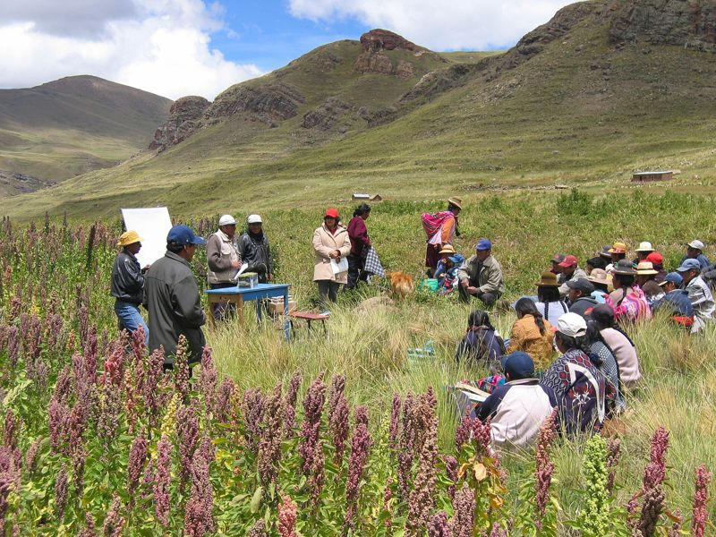
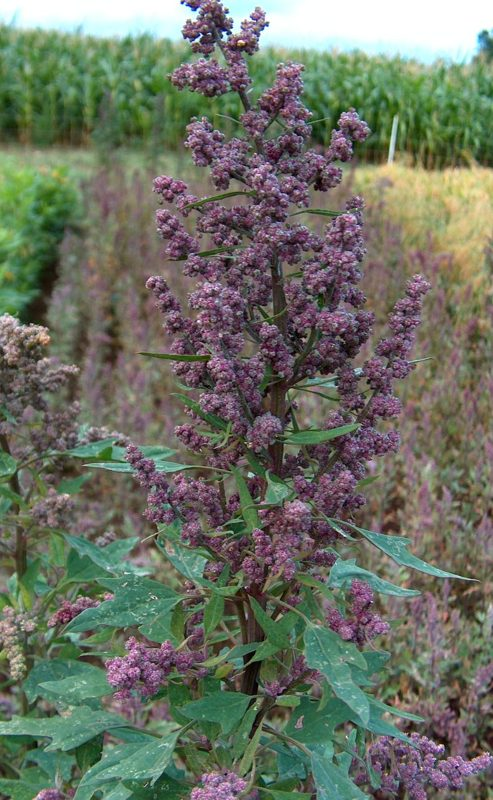
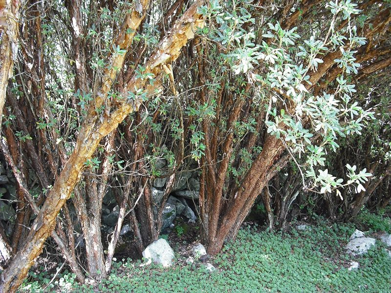
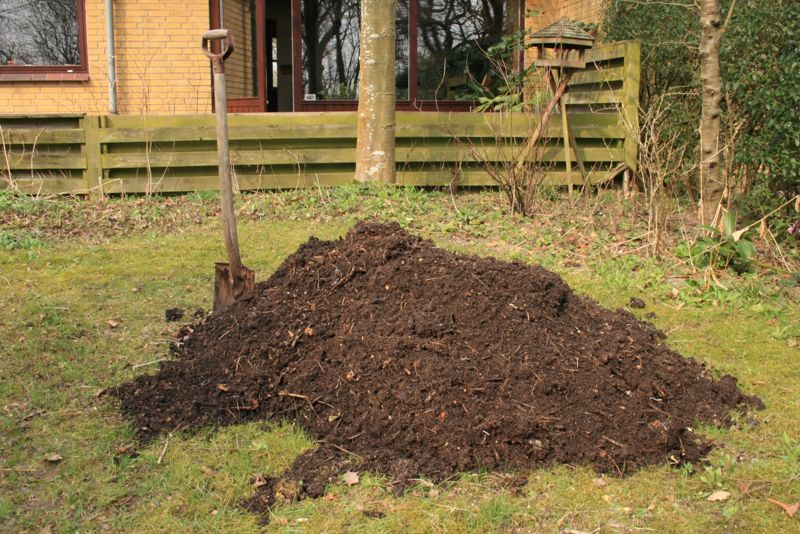
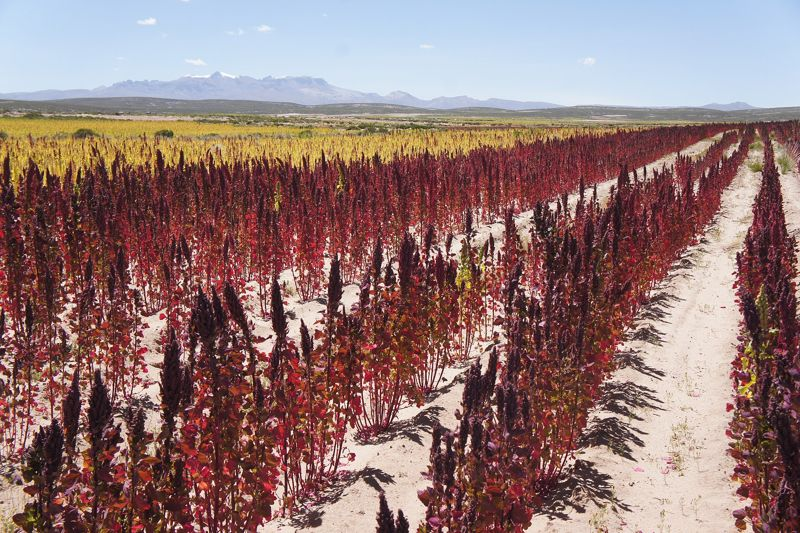

Organicos
Humus de lombriz premium
Saco de 50 kg, rico en ácidos húmicos y microorganismos benéficos.
S/ 45.00 / saco
Ver detalleInsumos registrados en SENASA
Reparto en 24-48 horas
Ingenieros agrónomos colegiados
Paga al cosechar tu campaña
Nuestras líneas
Cinco líneas de productos pensadas para la agricultura de costa, valle y sierra del sur peruano.

¿Por qué elegirnos?
En VerdeAndes Agro combinamos insumos de calidad con conocimiento técnico local. Conocemos los suelos volcánicos de Arequipa, la salinidad de la costa y los retos de la agricultura de altura.
Contenido destacado
Saco de 50 kg, rico en ácidos húmicos y microorganismos benéficos.
S/ 45.00 / saco
Ver detalle
Variedad roja de alto rendimiento y tolerante a heladas.
S/ 28.50 / kg
Ver detalleFórmula balanceada soluble para fertirriego.
S/ 185.00 / saco 50 kg
Ver detalle
Especie nativa altoandina, ideal para reforestación.
S/ 3.50 / plantón
Ver detalleMultimedia Real Descargada
Videos reales descargados localmente sobre la campiña agrícola de Arequipa y la rehabilitación de andenes en el Perú.
Blog agrícola

12 NOV 2026Guía paso a paso para transformar residuos de cosecha en abono.

28 OCT 2026Variedades recomendadas por el INIA para costa, valle y altiplano.
Por qué la queñua y el colle son aliados contra la erosión.
Testimonios
"Con el plan de fertilización que nos diseñaron, nuestra producción de cebolla en Santa Rita de Siguas subió un 30 %."
"Sus semillas de quinua certificada germinan parejo. La asesoría técnica en campo hace la diferencia."
"Reforestamos 12 hectáreas de la comunidad con plantones de queñua y pino. Excelente sobrevivencia."
Solicita una cotización personalizada o un análisis de suelo sin costo para nuevos clientes.